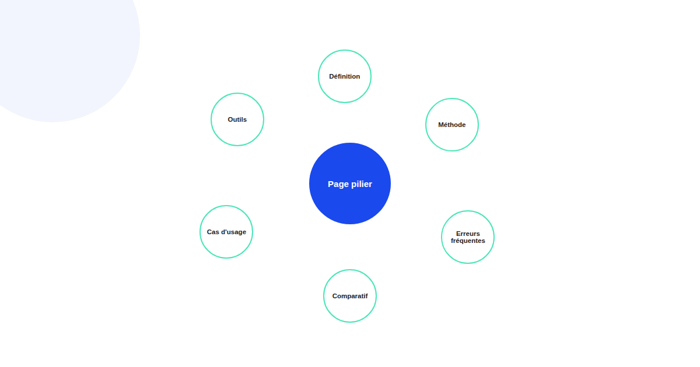
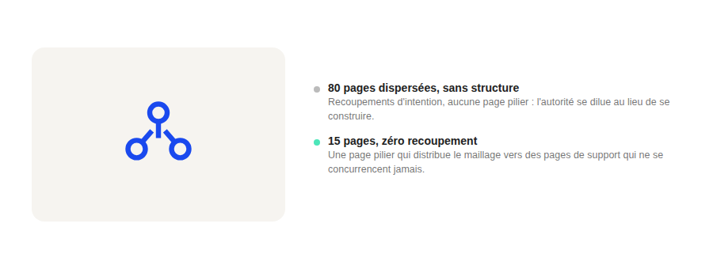

Topical authority : la méthode pour construire une autorité thématique qui tient la route
« Publier plus de contenu » est le conseil SEO le plus répété et le moins précis qui existe. Ce qui construit réellement une autorité thématique n'est pas le volume, c'est la structure de couverture d'un sujet et l'absence de trous ou de recoupements dans cette couverture.

Un site avec 80 articles dispersés peut avoir moins d'autorité thématique réelle qu'un site avec 15 pages correctement structurées. La différence ne se joue pas sur le nombre de pages, mais sur la façon dont elles couvrent, ensemble, l'ensemble des intentions de recherche d'un sujet donné — sans zone non couverte et sans deux pages qui répondent à la même question.
Étape 1 — Cartographier les intentions de recherche réelles du sujet
Avant d'écrire la moindre ligne, l'étape qui manque le plus souvent est de lister toutes les questions et sous-thèmes qu'un public cherche réellement autour d'un sujet : définition, comparaison, méthode, erreurs fréquentes, cas d'usage par secteur, outils. Cette cartographie, pas le mot-clé principal, est la vraie base du cluster : elle révèle les trous de couverture avant même d'avoir écrit quoi que ce soit.
Étape 2 — Construire une page pilier qui structure, pas qui résume
La page pilier n'est pas un résumé superficiel de toutes les sous-pages : c'est la colonne vertébrale qui donne une vue d'ensemble du sujet et distribue le maillage interne vers chaque page de support. Une page pilier qui se contente de paraphraser ses pages filles sans apporter de valeur propre affaiblit le cluster entier, parce qu'elle entre elle-même en concurrence avec ses propres pages de support sur les mêmes requêtes larges.

Étape 3 — Éliminer la cannibalisation avant qu'elle ne s'installe
Deux pages qui répondent à la même intention de recherche ne se renforcent pas mutuellement : elles se concurrencent, et cette concurrence dilue l'autorité du cluster au lieu de la construire. Avant de publier une nouvelle page, vérifier qu'aucune page existante ne répond déjà à la même intention est plus rentable que de publier puis corriger après coup — une fusion ou une différenciation d'angle tardive coûte toujours plus cher qu'une vérification en amont.
Étape 4 — Maillage interne dirigé, pas systématique
Lier chaque page de support à la page pilier, et la page pilier à chaque page de support, construit la structure de base. Mais le maillage le plus efficace va plus loin : lier aussi les pages de support entre elles quand leur contenu se complète naturellement (par exemple une page « méthode » qui renvoie vers une page « erreurs fréquentes » sur le même sous-thème), ce qui renforce la cohérence du cluster perçue à la fois par les lecteurs et par les moteurs.
Le signal qui prouve qu'un cluster fonctionne
Un cluster qui fonctionne se reconnaît à un signal simple : la page pilier gagne en visibilité au fil du temps à mesure que les pages de support se publient, sans qu'aucune de ces pages de support ne cannibalise les autres. Si la position de la page pilier stagne ou recule à mesure que le cluster grossit, c'est le signe d'un recoupement d'intentions à corriger, pas d'un besoin de contenu supplémentaire.
FAQ
Combien de pages faut-il pour construire une autorité thématique ?
Il n'y a pas de nombre universel : ce qui compte est de couvrir les sous-thèmes et intentions de recherche réels de votre audience sur le sujet, sans trou de couverture ni page redondante. Un cluster de 6 pages qui couvre vraiment un sujet vaut mieux qu'un cluster de 20 pages avec des recoupements.
Faut-il absolument une page pilier pour chaque cluster ?
C'est fortement recommandé : la page pilier donne une vue d'ensemble du sujet et sert de point d'entrée et de distribution de maillage interne vers les pages de support. Sans elle, le cluster perd sa colonne vertébrale et le maillage devient difficile à structurer de façon cohérente.
La cannibalisation entre deux pages du même cluster est-elle grave ?
Oui si elle persiste : deux pages qui répondent à la même intention de recherche se concurrencent plutôt que de se renforcer, ce qui dilue l'autorité du cluster au lieu de la construire. Fusionner ou différencier clairement l'angle de chaque page règle généralement le problème.
Envie de structurer un cocon de contenu qui tient vraiment la route ?
Pour aller plus loin, voir la page SEO, et l'article Structurer un site qui se positionne avec les cocons sémantiques.
Pour continuer sur ce sujet.